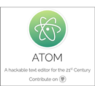

L'IDE ATOM
description :
 Atom est un éditeur de texte libre pour macOS, GNU/Linux et Windows développé par GitHub. Il supporte des plug-ins écrits en Node.js et implémente Git Control. La plupart des extensions sont sous licence libre et sont maintenues par la communauté9. Atom est basé sur Chromium et Electron et est écrit en CoffeeScript10. Il est aussi utilisé en tant qu’environnement de développement (EDI).
détails :
 Initialement, les extensions et tout ce qui ne faisait pas partie du noyau d'Atom étaient distribués sous licence open-source. Le 6 mai 2014, le reste d'Atom, y compris l'application de base, le gestionnaire de paquets d'Atom et l'application de bureau Atom basée sur Chromium et Electron (anciennement Atom Shell11) ont été mis à disposition en tant que logiciel libre avec une licence MIT12.
Initialement, les extensions et tout ce qui ne faisait pas partie du noyau d'Atom étaient distribués sous licence open-source. Le 6 mai 2014, le reste d'Atom, y compris l'application de base, le gestionnaire de paquets d'Atom et l'application de bureau Atom basée sur Chromium et Electron (anciennement Atom Shell11) ont été mis à disposition en tant que logiciel libre avec une licence MIT12.
TUTOS
Installation :
Plugins :
Config Php :
DOWNLOAD
Ce client gratuit, peut être utilisé directement avec sa configuration par défaut. Mais vous ne pourrez pas vous passer des nombreux packages qui multiplient sa productivité, quelque soit le langage considéré. La vidéo dédiée à ceux-ci vous donnera une liste non exhaustive, afin de mieux configurer votre environnement de travail.
En vrac:
- emmet et l'usage des snippets
- atom-beautify, le nettoyeur de code
- autoclose-html-plus ferme vos balises
- atom-liquid-snippets pour les commandes
- git-blame, git-plus, git-time
- linters pour différents langages
- etc...